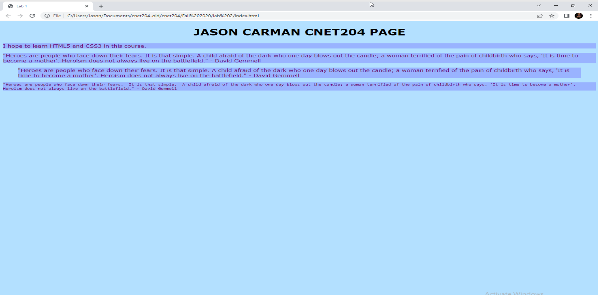

Lab 2 - Introduction to CSS3
Overview
This week's lab will cover the following:
- Creating an external style sheet, called style.css
- Learning some introductory CSS styling
- Learning how to apply CSS using an external style sheet
Getting started
Open the file you created in Lab 1 (index.html). You'll be making changes to this file for Lab 2.
Blockquote and pre-formatted text
Add the following quote (below the paragraph you wrote in Lab 1) using the paragraph(<p> and </p>), blockquote(<blockquote> and </blockquote>) and pre-formatted(<pre> and </pre>) text tags to the body of your web page. The blockquote and pre-formatted tag are applied to the appropriate text in the same method you learned to use the paragraph quote.
"Heroes are people who face down their fears. It is that simple. A child afraid of the dark who one day blows out the candle; a woman terrified of the pain of childbirth who says, 'It is time to become a mother'. Heroism does not always live on the battlefield." - David GemmellTip: Save! Remember to save regularly, in the event of power outage or other situations that could cause loss of work.
Implementing Cascading Style Sheets(CSS)
Any HTML tag can have a CSS style applied to it. CSS can be implemented on your page in a variety of ways. These are:
- Inline: Used within an html tag to apply a style uniquely in that place. This should be used sparingly, if at all.
- Internal: CSS is applied in a style block in the header. This is more desirable than Inline, however becomes problematic when trying to maintain a unique style across multiple pages on a website.
- External: CSS is applied using a separate file that can be then linked your page in the header. This is ideal, as you can manage the appearance of your website from one common place. We will be focusing on this method.
Creating Your Style Sheet
Create a new file (called style.css) in the same directory as your labs.
Linking Your Style Sheet to Your Index Page
Add a link to the head portion of your index page using the following syntax:
<link rel="stylesheet" type="text/css" href="style.css">
Note the link tag has 3 modifiers we're using in this context. Rel defines the relationship (ie: How is the linked content relevant to the page), type describes the type of content being linked (in our case text/css is the proper type to reference a CSS style sheet), and href lists the name of the file and location that is being included. In our case the style sheet exists in the same directory as our web page, so an absolute path to the included file is not necessary.
CSS Comments
Comments are often helpful when dealing with large blocks of CSS code. Adding comments allows anyone looking at the code to understand what's going on (assuming you've clearly explained it in the comment). Using the following sample, add your name and student number as a comment in the top of the CSS file.
/* Jason Carman 000000000 */
Creating your style
CSS references HTML tags, and applies different attributes to them. Each tag has a variety of attributes that can be modified. Some attributes can apply to multiple tags and work similarly with different tags. For example, to set the body background to black, you would add the following syntax to your style sheet.
body {
background-color: #000000;
}
In the above sample, the tag you're modifying (in this case the body tag) is referred to as the selector. The things you can modify that appear between the curly braces are referred to as the attributes. Notice the color code begins with a # and consists of 6 digits. Each of these is a hexadecimal digit, which are grouped into 3 categories respectively. The first two represent the red balance in the colour, the second two green and the final two blue (as demonstrated by the sample below).
#RRGGBB;Blending these three colours together works the same as mixing paints/colours (which you may have experienced in high school art class). You can play with the numbers to get the colour you wish, or use an online resource such as the one w3schools provides.
To do:
Using the following reference material complete the following. It may be useful to refresh your page each time you change a value in the css to view the changes.
- Set the body background colour to a color of your choosing.
- Set the body text colour (using the color attribute) to a color of your choosing.
- Set the font for the body (using the font-family attribute) to arial or verdana.
- Set the heading tag you used to centered (using the text-align attribute) and uppercase (using the text-transform attribute).
- Give your heading a colour uniquely different from the text colour.
Notice the pre-formatted text runs off the side of the screen and requires scrolling to read. This isn't very user friendly. To correct this we can modify the pre tag through css to allow word wrapping. Add a selector for the pre tag and give it the following attribute.
white-space: pre-wrap;
You can specify multiple selectors to be modified together. This is useful if you wish to apply an attribute uniformly across multiple tags. We'll use this to assign a slightly darker shade to the background of the paragraph, blockquote and pre tags. To specify multiple selectors, list them separated by commas as below:
p, blockquote, pre {
}
Completing the Lab
To view your page, use the following URL (substituting your information where appropriate). studentweb.cencol.ca/firstpartofemail
Your page should look similar to the following output. If it does not, go back and complete whatever you've missed.
Upon completion of this lab you should have a simple web page using several tags we talked about in our first lecture. Your page should validate using the w3schools html validator & css validator. The following questions are for furthering your knowledge only, and may appear on quizzes or tests at any time later in this course.
Exploration Questions
- What does CSS stand for?
- What is the difference between a selector and an attribute?
- What are the three ways to implement CSS? Which of these did we use in the assignment?
- How do you specify multiple selectors in CSS?
- Colour codes are three groups of two hex digits per group. What do the three groups of hex digits represent in terms of colours?